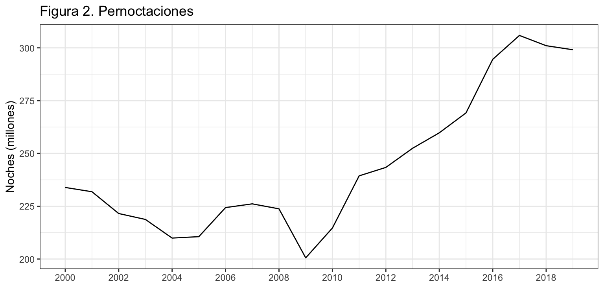
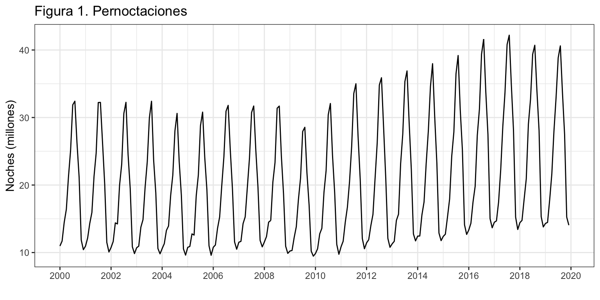

Introducción
Consideremos de nuevo la serie temporal correspondiente al número de pernoctaciones que los turistas extranjeros realizan en España en alojamientos turísticos autorizados (que llamaremos Pernoctaciones en adelante). Esta serie está disponible en el Eurostat desde enero de 2000 hasta diciembre de 2019, un total de 20 años y 240 observaciones.
La serie presenta tendencia decreciente hasta finales de la primera década del presente siglo y luego creciente hasta los dos últimos años. La estacionalidad de orden 12 estaba determinada por las vacaciones de verano. El esquema es multiplicativo.

Ajuste por el método ingenuo con estacionalidad
Vamos ajustar y predecir la serie de pernoctaciones por el método más sencillo posible, el método ingenuo con estacionalidad. Recordemos que en este modelo la predicción para un mes consiste en la última observación del mismo mes disponible.
La calidad de ajuste que obtengamos y la capacidad predictiva seran el punto de referecia cuando apliquemos metodologías más complejas de predicción.
Solicitaremos un horizonte de prediccines de 36 meses h = 36 (aunque solo mostramos los 12 primeros meses).
Point Forecast Lo 95 Hi 95
Jan 2020 4303008 3508475 5097541
Feb 2020 4276924 3482391 5071457
Mar 2020 4787343 3992810 5581876
Apr 2020 4932152 4137619 5726685
May 2020 5891503 5096970 6686036
Jun 2020 7394769 6600236 8189302
Jul 2020 10528074 9733541 11322607
Aug 2020 11795992 11001459 12590525
Sep 2020 7644198 6849665 8438731
Oct 2020 5933838 5139305 6728371
Nov 2020 4103339 3308806 4897872
Dec 2020 4114637 3320104 4909170
La calidad del ajuste es bastante buena, con un MAPE de 5.3% y un RMSE de 400 mil pernoctaciones (o 300 mil si usamos el MAE). Sin embargo, el ACF1, cercano a uno es 1, indica que hay mucho rango de mejora en la predicción por intervalo.
ME RMSE MAE MPE MAPE MASE ACF1
Training set -63285.89 405381.2 308385.7 -1.163295 5.318728 1 0.7222781
Predicción
La figura 2 muestra los valores de predicción para los próximos tres años. Observa que las predicicones se mantienen constantes y son iguales a las pernoctaciones de 2019.

Validación
Ya hemos visto que el método ingenuo con estacionalidad comete un error próximo al 5.3%. Este valor es la estimación del error en la previsión intra-muestral y a un periodo vista. A fin de poder estimar mejor la capacidad predictiva del método vamos a estimar el esquema de origen de predicción móvil para obtener los errores extra-muestrales según el horizonte de previsión.
Asumimos que se precisan diez años para hacer una buena estimación, \(k=120\), y que el horizonte temporal es un año, \(h = 12\) meses. La siguiente rutina permite obtener el MAPE para previsiones con un horizonte temporal desde 1 mes hasta 12 meses.
[1] 4.883350 4.834164 4.828850 4.826510 4.791348 4.758310 4.744558 4.720736
[9] 4.681830 4.673242 4.644297 4.638341

La figura 3 muestra el error de previsión extra-muestral según el horizonte de previsión. Cuidado con la interpretación. El error prácticamente no varía con el horizonte temporal y se mueve entre el 4.6% y el 4.9%. Probablemente la tendencia decreciente se deba a que todo el rango de previsión se ubica en el periodo creciente de la serie.
LS0tCnRpdGxlOiAiUGVybm9jdGFjaW9uZXMgZW4gYWxvamFtaWVudG9zIHR1csOtc3RpY29zIGRlIHR1cmlzdGFzIGV4dHJhbmplcm9zIgpzdWJ0aXRsZTogIk3DqXRvZG8gaW5nZW51byIKYXV0aG9yOiAiSXbDoW4gQXJyaWJhcyAoRGVwdG8uIEFuw6FsaXNpcyBFY29uw7NtaWNvLiBVbml2ZXJzaXRhdCBkZSBWYWzDqG5jaWEpIgpvdXRwdXQ6IAogIGh0bWxfZG9jdW1lbnQ6CiAgICB0aGVtZTogY2VydWxlYW4KICAgIGhpZ2hsaWdodDogcHlnbWVudHMgCiAgICBmaWdfY2FwdGlvbjogZmFsc2UKICAgIGRmX3ByaW50OiBrYWJsZQogICAgdG9jOiB0cnVlCiAgICB0b2NfZGVwdGg6IDIKICAgIG51bWJlcl9zZWN0aW9uczogdHJ1ZQogICAgc2VsZl9jb250YWluZWQ6IHRydWUKICAgIGNvZGVfZG93bmxvYWQ6IHRydWUKLS0tCgpgYGB7ciBjaHVua19zZXR1cCwgZWNobyA9IEZBTFNFfQprbml0cjo6b3B0c19jaHVuayRzZXQod2FybmluZyA9IEZBTFNFLCAKICAgICAgICAgICAgICAgICAgICAgIG1lc3NhZ2UgPSBGQUxTRSwgCiAgICAgICAgICAgICAgICAgICAgICBjb21tZW50ID0gIiIsCiAgICAgICAgICAgICAgICAgICAgICBmaWcuYWxpZ24gPSAiY2VudGVyIiwgCiAgICAgICAgICAgICAgICAgICAgICBmaWcuc2hvdyA9ICJob2xkIiwKICAgICAgICAgICAgICAgICAgICAgIGZpZy5oZWlnaHQgPSA0LAogICAgICAgICAgICAgICAgICAgICAgZmlnLndpZHRoID0gOCwKICAgICAgICAgICAgICAgICAgICAgIG91dC53aWR0aCA9ICI4MCUiKSAKYGBgCgpgYGB7ciBvcHRpb25zX3NldHVwLCBlY2hvID0gRkFMU0V9Cm9wdGlvbnMoc2NpcGVuID0gOTk5KSAjLSBwYXJhIHF1aXRhciBsYSBub3RhY2lvbiBjaWVudGlmaWNhCmBgYAoKYGBge3IgbGlicmVyaWFzLCBlY2hvID0gRkFMU0V9CmxpYnJhcnkoZm9yZWNhc3QpCmxpYnJhcnkoZ2dwbG90Mik7IHRoZW1lX3NldCh0aGVtZV9idygpKQpsaWJyYXJ5KGdyaWRFeHRyYSkKbGlicmFyeShncmlkKQpgYGAKClwKXAoKIyBJbnRyb2R1Y2Npw7NuCgpDb25zaWRlcmVtb3MgZGUgbnVldm8gbGEgc2VyaWUgdGVtcG9yYWwgY29ycmVzcG9uZGllbnRlIGFsIG7Dum1lcm8gZGUgcGVybm9jdGFjaW9uZXMgcXVlIGxvcyB0dXJpc3RhcyBleHRyYW5qZXJvcyByZWFsaXphbiBlbiBFc3Bhw7FhIGVuIGFsb2phbWllbnRvcyB0dXLDrXN0aWNvcyBhdXRvcml6YWRvcyAocXVlIGxsYW1hcmVtb3MgUGVybm9jdGFjaW9uZXMgZW4gYWRlbGFudGUpLiBFc3RhIHNlcmllIGVzdMOhIGRpc3BvbmlibGUgZW4gZWwgRXVyb3N0YXQgZGVzZGUgZW5lcm8gZGUgMjAwMCBoYXN0YSBkaWNpZW1icmUgZGUgMjAxOSwgdW4gdG90YWwgZGUgMjAgYcOxb3MgeSAyNDAgb2JzZXJ2YWNpb25lcy4KCkxhIHNlcmllIHByZXNlbnRhIHRlbmRlbmNpYSBkZWNyZWNpZW50ZSBoYXN0YSBmaW5hbGVzIGRlIGxhIHByaW1lcmEgZMOpY2FkYSBkZWwgcHJlc2VudGUgc2lnbG8geSBsdWVnbyBjcmVjaWVudGUgaGFzdGEgbG9zIGRvcyDDumx0aW1vcyBhw7Fvcy4gTGEgZXN0YWNpb25hbGlkYWQgZGUgb3JkZW4gMTIgZXN0YWJhIGRldGVybWluYWRhIHBvciBsYXMgdmFjYWNpb25lcyBkZSB2ZXJhbm8uIEVsIGVzcXVlbWEgZXMgbXVsdGlwbGljYXRpdm8uCgpgYGB7cn0KClBlcm5vY3RhY2lvbmVzIDwtIHJlYWQuY3N2MigiLi9zZXJpZXMvUGVybm9jdGFjaW9uZXMuY3N2IiwgaGVhZGVyID0gVFJVRSkKUGVybm9jdGFjaW9uZXMgPC0gdHMoUGVybm9jdGFjaW9uZXNbLDJdLCBzdGFydCA9IDIwMDAsIGZyZXF1ZW5jeSA9IDEyKQpgYGAKCmBgYHtyfQphdXRvcGxvdChQZXJub2N0YWNpb25lcy8xMDAwMDAwLAogICAgICAgICB4bGFiID0gIiIsCiAgICAgICAgIHlsYWIgPSAiTm9jaGVzIChtaWxsb25lcykiLAogICAgICAgICBtYWluID0gIkZpZ3VyYSAxLiBQZXJub2N0YWNpb25lcyIpICsKICBzY2FsZV94X2NvbnRpbnVvdXMoYnJlYWtzPSBzZXEoMjAwMCwgMjAyMCwgMikpICAKYGBgCgpcClwKCiMgQWp1c3RlIHBvciBlbCBtw6l0b2RvIGluZ2VudW8gY29uIGVzdGFjaW9uYWxpZGFkCgpWYW1vcyBhanVzdGFyIHkgcHJlZGVjaXIgbGEgc2VyaWUgZGUgcGVybm9jdGFjaW9uZXMgcG9yIGVsIG3DqXRvZG8gbcOhcyBzZW5jaWxsbyBwb3NpYmxlLCBlbCBtw6l0b2RvIGluZ2VudW8gY29uIGVzdGFjaW9uYWxpZGFkLiBSZWNvcmRlbW9zIHF1ZSBlbiBlc3RlIG1vZGVsbyBsYSBwcmVkaWNjacOzbiBwYXJhIHVuIG1lcyBjb25zaXN0ZSBlbiBsYSDDumx0aW1hIG9ic2VydmFjacOzbiBkZWwgbWlzbW8gbWVzIGRpc3BvbmlibGUuCgpMYSBjYWxpZGFkIGRlIGFqdXN0ZSBxdWUgb2J0ZW5nYW1vcyB5IGxhIGNhcGFjaWRhZCBwcmVkaWN0aXZhIHNlcmFuIGVsIHB1bnRvIGRlIHJlZmVyZWNpYSBjdWFuZG8gYXBsaXF1ZW1vcyBtZXRvZG9sb2fDrWFzIG3DoXMgY29tcGxlamFzIGRlIHByZWRpY2Npw7NuLgoKU29saWNpdGFyZW1vcyB1biBob3Jpem9udGUgZGUgcHJlZGljY2luZXMgZGUgMzYgbWVzZXMgYGggPSAzNmAgKGF1bnF1ZSBzb2xvIG1vc3RyYW1vcyBsb3MgMTIgcHJpbWVyb3MgbWVzZXMpLgoKYGBge3IsIGV2YWwgPSBGQUxTRX0KUGVybm9jdGFjaW9uZXNQcmUgPC0gc25haXZlKFBlcm5vY3RhY2lvbmVzLCBoID0gMzYsIGxldmVsID0gMC45NSkKUGVybm9jdGFjaW9uZXNQcmUKYGBgCgpgYGB7ciwgZWNobyA9IEZBTFNFfQpQZXJub2N0YWNpb25lc1ByZSA8LSBzbmFpdmUoUGVybm9jdGFjaW9uZXMsIGggPSAxMiwgbGV2ZWwgPSAwLjk1KQpQZXJub2N0YWNpb25lc1ByZQpQZXJub2N0YWNpb25lc1ByZSA8LSBzbmFpdmUoUGVybm9jdGFjaW9uZXMsIGggPSAzNiwgbGV2ZWwgPSAwLjk1KQpgYGAKCkxhIGNhbGlkYWQgZGVsIGFqdXN0ZSBlcyBiYXN0YW50ZSBidWVuYSwgY29uIHVuIE1BUEUgZGUgNS4zJSB5IHVuIFJNU0UgZGUgNDAwIG1pbCBwZXJub2N0YWNpb25lcyAobyAzMDAgbWlsIHNpIHVzYW1vcyBlbCBNQUUpLiBTaW4gZW1iYXJnbywgZWwgQUNGMSwgY2VyY2FubyBhIHVubyBlcyAxLCBpbmRpY2EgcXVlIGhheSBtdWNobyByYW5nbyBkZSBtZWpvcmEgZW4gbGEgcHJlZGljY2nDs24gcG9yIGludGVydmFsby4KIApgYGB7cn0KYWNjdXJhY3koUGVybm9jdGFjaW9uZXNQcmUpCmBgYAogClwKXAoKIyBQcmVkaWNjacOzbgoKTGEgZmlndXJhIDIgbXVlc3RyYSBsb3MgdmFsb3JlcyBkZSBwcmVkaWNjacOzbiBwYXJhIGxvcyBwcsOzeGltb3MgdHJlcyBhw7Fvcy4gT2JzZXJ2YSBxdWUgbGFzIHByZWRpY2ljb25lcyBzZSBtYW50aWVuZW4gY29uc3RhbnRlcyB5IHNvbiBpZ3VhbGVzIGEgbGFzIHBlcm5vY3RhY2lvbmVzIGRlIDIwMTkuCgpgYGB7cn0KYXV0b3Bsb3QoUGVybm9jdGFjaW9uZXNQcmUsCiAgICAgICAgIHhsYWIgPSAiIiwKICAgICAgICAgeWxhYiA9ICJOb2NoZXMiLAogICAgICAgICBtYWluID0gIkZpZ3VyYSAyLiBQZXJub2N0YWNpb25lcyAoMjAwMC0yMDE5KSB5IHByZWRpY2Npw7NuICgyMDIwLTIwMjIpIiwKICAgICAgICAgUEkgPSBGQUxTRSkKYGBgCgpcClwKCiMgVmFsaWRhY2nDs24KCllhIGhlbW9zIHZpc3RvIHF1ZSBlbCBtw6l0b2RvIGluZ2VudW8gY29uIGVzdGFjaW9uYWxpZGFkIGNvbWV0ZSB1biBlcnJvciBwcsOzeGltbyBhbCA1LjMlLiBFc3RlIHZhbG9yIGVzIGxhIGVzdGltYWNpw7NuIGRlbCBfZXJyb3IgZW4gbGEgcHJldmlzacOzbiBpbnRyYS1tdWVzdHJhbCB5IGEgdW4gcGVyaW9kbyB2aXN0YV8uIEEgZmluIGRlIHBvZGVyIGVzdGltYXIgbWVqb3IgbGEgY2FwYWNpZGFkIHByZWRpY3RpdmEgZGVsIG3DqXRvZG8gdmFtb3MgYSBlc3RpbWFyIGVsIGVzcXVlbWEgZGUgX19vcmlnZW4gZGUgcHJlZGljY2nDs24gbcOzdmlsX18gcGFyYSBvYnRlbmVyIGxvcyBlcnJvcmVzIGV4dHJhLW11ZXN0cmFsZXMgc2Vnw7puIGVsIGhvcml6b250ZSBkZSBwcmV2aXNpw7NuLgoKQXN1bWltb3MgcXVlIHNlIHByZWNpc2FuIGRpZXogYcOxb3MgcGFyYSBoYWNlciB1bmEgYnVlbmEgZXN0aW1hY2nDs24sICRrPTEyMCQsIHkgcXVlIGVsIGhvcml6b250ZSB0ZW1wb3JhbCBlcyB1biBhw7FvLCAkaCA9IDEyJCBtZXNlcy4gTGEgc2lndWllbnRlIHJ1dGluYSBwZXJtaXRlIG9idGVuZXIgZWwgTUFQRSBwYXJhIHByZXZpc2lvbmVzIGNvbiB1biBob3Jpem9udGUgdGVtcG9yYWwgZGVzZGUgMSBtZXMgaGFzdGEgMTIgbWVzZXMuCiAgCmBgYHtyfSAgCmsgPC0gMTIwICAgICAgICAgICAgICAgICAjTWluaW1vIG51bWVybyBkZSBkYXRvcyBwYXJhIGVzdGltYXIKaCA8LSAxMiAgICAgICAgICAgICAgICAgICNIb3Jpem9udGUgZGUgbGFzIHByZWRpY2ljb25lcwpUVCA8LSBsZW5ndGgoUGVybm9jdGFjaW9uZXMpICAjTG9uZ2l0dWQgc2VyaWUKcyA8LSBUVCAtIGsgLSBoICAgICAgICAgICNUb3RhbCBkZSBlc3RpbWFjaW9uZXMKCm1hcGVTbmFpdmUgPC0gbWF0cml4KE5BLCBzICsgMSwgaCkKZm9yIChpIGluIDA6cykgewogIHRyYWluLnNldCA8LSBzdWJzZXQoUGVybm9jdGFjaW9uZXMsIHN0YXJ0ID0gaSArIDEsIGVuZCA9IGkgKyBrKQogIHRlc3Quc2V0IDwtICBzdWJzZXQoUGVybm9jdGFjaW9uZXMsIHN0YXJ0ID0gaSArIGsgKyAxLCBlbmQgPSBpICsgayArIGgpCiAgCiAgZml0IDwtIHNuYWl2ZSh0cmFpbi5zZXQsIGggPSBoKQogIG1hcGVTbmFpdmVbaSArIDEsXSA8LSAxMDAqYWJzKHRlc3Quc2V0IC0gZml0JG1lYW4pL3Rlc3Quc2V0Cn0KCm1hcGVTbmFpdmUgPC0gY29sTWVhbnMobWFwZVNuYWl2ZSkKbWFwZVNuYWl2ZQoKZ2dwbG90KCkgKwogIGdlb21fbGluZShhZXMoeCA9IDE6MTIsIHkgPSBtYXBlU25haXZlKSkgKwogIGdndGl0bGUoIkZpZ3VyYSAzLiBFcnJvciBkZSBwcmVkaWNjacOzbiBzZWfDum4gaG9yaXpvbnRlIHRlbXBvcmFsIikgKwogIHhsYWIoIkhvcml6b250ZSB0ZW1wb3JhbCBkZSBwcmVkaWNjacOzbiIpICsKICB5bGFiKCJNQVBFIikgKwogIHNjYWxlX3hfY29udGludW91cyhicmVha3M9IDE6MTIpCmBgYAoKTGEgZmlndXJhIDMgbXVlc3RyYSBlbCBlcnJvciBkZSBwcmV2aXNpw7NuIGV4dHJhLW11ZXN0cmFsIHNlZ8O6biBlbCBob3Jpem9udGUgZGUgcHJldmlzacOzbi4gQ3VpZGFkbyBjb24gbGEgaW50ZXJwcmV0YWNpw7NuLiBFbCBlcnJvciBwcsOhY3RpY2FtZW50ZSBubyB2YXLDrWEgY29uIGVsIGhvcml6b250ZSB0ZW1wb3JhbCB5IHNlIG11ZXZlIGVudHJlIGVsIDQuNiUgeSBlbCA0LjklLiBQcm9iYWJsZW1lbnRlIGxhIF90ZW5kZW5jaWFfIGRlY3JlY2llbnRlIHNlIGRlYmEgYSBxdWUgdG9kbyBlbCByYW5nbyBkZSBwcmV2aXNpw7NuIHNlIHViaWNhIGVuIGVsIHBlcmlvZG8gY3JlY2llbnRlIGRlIGxhIHNlcmllLgoKXApcClwKXAoK